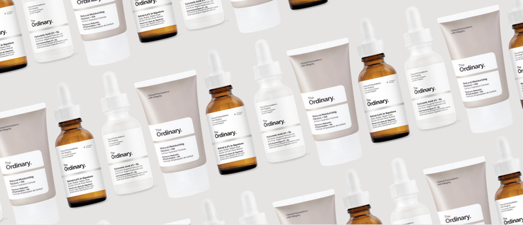

Hello Beauty!
Skincare Tips For Beginners
3 Dermatologist-Approved Skincare Tips for Beginners!
You know the basics — drink plenty of water, get enough sleep, and wash your face, but what about everything in between? Luckily, there’s no need to shell out tons of cash on any magical procedures or expensive creams to achieve flawless skin.
Lets check it out your routine, is the same as the list on the side? :P Dont forget, beauty is pain but do not take any harmful ingredients or any dangerous medical without doctor permission.
1. Use the correct cleanser for your skin type.
For oily or acne-prone skin, a salicylic gel or benzoyl peroxide wash works great," says Dr. Ava Shamban, a dermatologist in Santa Monica. "For dry mature skin, use either a moisturizing glycolic or milky cleanser. For skin with brown spots or melasma, use a brightening wash, such as an alpha hydroxy acid cleanser.
2. Don’t use too many products.
Layering on multiple skincare products all at once is a big no-no, says Dr. Julia Tzu, an NYC-based dermatologist. It can be harsh on the skin, resulting in more breakouts and clogged pores.
3. Moisturize both day and night.
The best times to moisturize are right after you get out of the shower and right before you go to bed," explained Dr. Janet Prystowsky M.D., an NYC-based dermatologist. Avoid lotions with heavy fragrances and make sure you find a moisturizer gentle enough for every day use with zero irritation.
The Skin Care Ingredients you Shouldnt have TOGETHER
Hydroxy Acids and Retinoic Acid: A Solid “Don’t”
AHAs and BHAs as well as retinoic acid are pretty powerful skin treatments and they should be used sparingly. Combining hydroxy acids and retinoic acid together can cause some serious irritation if used in tandem. In a similar vein, we don’t recommend combining these products with ascorbic acid (vitamin C). This doesn’t mean you can’t use all of these ingredients in your routine. Try staggering usage – i.e. applying vitamin C in the morning and retinol at night, or applying retinol 3 days a week and hydroxy acids two – and see if this works for your skin.Acne Treatments: Mostly a “Don’t”
Benzoyl peroxide and salicylic acid are two of the most well known acne treatments in the skin care game, but generally shouldn’t be used together. Dr. Farber tells us that both “can be very drying and irritating when applied together,” so it’s better to use them separately. However, there are some prescription-grade medications that contain both benzoyl peroxide and salicylic acid. It’s best to consult with your dermatologist if you’re interested in mixing these two. Also, be careful mixing benzoyl peroxide and retinol. There are medications that contain both of these ingredients (Differin), but this combination has the potential to be highly irritating, so if you’re thinking of doing it, consult a dermatologist first.
